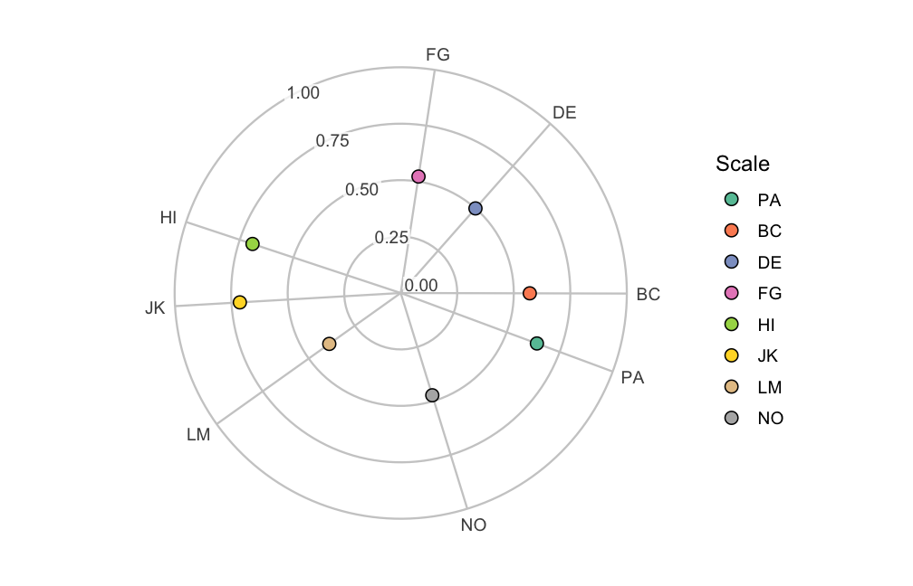

Level: Intermediate. Read “Confidence Interval Accuracy” first.
1. Overview
This vignette asks the exploratory version of the structure question
and shows what ipsatizing removes from a profile. Section 2, “Does the
instrument have circumplex structure at all?”, runs the five tests of
fit_structure() and says where their cutoffs come from. It
then reads their classifications beside a CPM fit. Section 3,
“Ipsatization and what it costs”, shows what ipsatize()
removes from an SSM profile. The examples use the jz2017
dataset that “Evaluating Circumplex Structure” describes. The Wrap-up
lists what the page covered and names the next pages, and the References
list the sources cited.
2. Does the instrument have circumplex structure at all?
The confirmatory model of “Evaluating Circumplex Structure”
(cpm_fit()) fits one theory-driven circular model and asks
how well it fits. A complementary, more exploratory question is whether
the scales’ correlations show circumplex structure at all,
without committing to the theoretical angles. Are the scales spread
evenly around a circle, with comparable communalities? Or do they
cluster into a small number of independent clusters (simple structure)?
Acton and Revelle (A&R, 2004) evaluated ten such criteria by
simulation. fit_structure() implements four of them:
Fisher, Gap, VT2, and Rotation. It leaves out a variance-test variant
that A&R found ineffective (VT1). It also leaves out MT, a criterion
so highly correlated with the Rotation Test (RT) as to be redundant. In
their Table 1, MT has r = .99 with RT. A fifth test, RANDALL, is not one
of A&R’s ten at all. It is an independent order-correspondence test
(Hubert & Arabie, 1987, and Tracey, 1997). A&R excluded it from
their own simulation because, unlike their criteria, its null
distribution is known analytically rather than needing simulated cutoffs
(their footnote 3).
The five tests
fit_structure() extracts the first two unrotated
principal-axis factors of the scales’ correlation matrix (Acton &
Revelle, 2004, p. 13). It computes four criteria from that two-factor
solution, plus a fifth test that works directly on the correlations:
- Fisher Test (equal axes). Are the scales’ communalities on the two-factor solution comparable, rather than one axis dominating? The statistic is the coefficient of variation of the scales’ vector lengths .
- Gap Test (equal spacing). Are the scales evenly distributed in angle around the circle, rather than bunched together? The statistic is the variance of the angular gaps between angularly adjacent scales. It includes the gap that wraps from the last scale back around to the first.
- Variance Test (VT2) and Rotation Test (interstitiality). Both ask whether the scales sit between a small number of dominant axes rather than on them. That is the signature of a genuine circumplex, as opposed to simple structure. Each takes a criterion computed at many rotations of the two-factor solution, and summarizes it as a coefficient of variation across rotations. A true circumplex is indifferent to rotation, so both criteria stay low.
-
RANDALL (Hubert & Arabie, 1987, and Tracey,
1997). Does the hypothesized circular order that you supplied
(the order of
scales) match the observed correlations? Here a match means that closer-together scales correlate more strongly. Unlike the other four, this is a genuine randomization test. Its null distribution (scales randomly relabeled onto the hypothesized positions) is enumerated exactly for up to nine scales. For more scales, it is estimated by Monte Carlo relabeling. So the test returns an exact or Monte Carlo p value rather than a simulated cutoff.
The four factor-analytic criteria are Fisher, Gap, VT2 and Rotation.
They have the most power to detect simple structure when there is no
large general factor across the scales. Deviation scoring
centers each respondent on their own mean across the selected scales,
which is exactly what ipsatize() does. It approximates
removing that general factor (Acton & Revelle, 2004, p. 9), so it is
fit_structure()’s default. Pass
scoring = "raw" to analyze the scores as given. Each of the
two scorings carries its own set of cutoffs (next subsection), matched
automatically.
res <- fit_structure(jz2017, scales = PANO())
res
#>
#> Circumplex Structure Tests (Acton & Revelle, 2004)
#> Scales (nv): 8
#> Scoring: deviation (row-mean centered)
#>
#> # Exploratory criteria
#>
#> Test Statistic
#> Fisher 0.102
#> Gap 0.152
#> Variance 0.180
#> Rotation 0.325
#> Interpretation
#> equal axes: at least 3x as likely as the alternative
#> equal spacing: at least 3x as likely as the alternative
#> interstitiality: almost certain
#> interstitiality: at least 3x as likely as the alternative
#>
#> # Order hypothesis (RANDALL)
#>
#> Correspondence index = 0.868, p = 0.000397 (exact, 5040 relabelings)
#>
#> Interpretations are heuristic likelihood classifications from simulation,
#> not significance tests (Acton & Revelle, 2004). RANDALL's p-value is exact.
summary(res)
#>
#> Circumplex Structure Tests (Acton & Revelle, 2004)
#> Scales (nv): 8
#> Scoring: deviation (row-mean centered)
#> Ridge: 0
#>
#> # Exploratory criteria
#>
#> Test Statistic Almost Thrice Twice Verdict
#> Fisher 0.102 0.07 0.12 0.15 3x+ likely
#> Gap 0.152 0.15 0.40 0.46 3x+ likely
#> Variance 0.180 0.19 0.59 0.64 almost certain
#> Rotation 0.325 0.32 0.64 0.67 3x+ likely
#>
#> # Estimated scale geometry
#>
#> Scale Angle Communality
#> PA 339.635 0.642
#> BC 359.858 0.571
#> DE 48.584 0.500
#> FG 81.337 0.522
#> HI 161.662 0.690
#> JK 183.339 0.713
#> LM 215.503 0.388
#> NO 287.119 0.474
#>
#> # Order hypothesis (RANDALL)
#>
#> Correspondence index = 0.868, p = 0.000397 (exact, 5040 relabelings)
#>
#> Interpretations are heuristic likelihood classifications from simulation,
#> not significance tests (Acton & Revelle, 2004). RANDALL's p-value is exact.summary() adds the numeric cutoffs behind each
classification. It also adds the estimated angle and communality of
every scale on the two-factor solution, the same geometry that the plot
below draws. A clean circumplex shows scales at roughly the theoretical
octant spacing, with broadly similar communalities. Fisher
measures departures in communality, and Gap measures
departures in even angular spacing. Variance (VT2) and
Rotation test interstitiality.
plot(res)
For the IIP-SC octants, the picture agrees with the CPM fit in
“Evaluating Circumplex Structure”. The scales keep their theoretical
circular ordering, with comparable communalities and roughly
even spacing. The Fisher, Gap, and interstitiality criteria all classify
the configuration as consistent with (or close to) a circumplex under
deviation scoring. One caveat applies when reading the angles. The
two-factor solution is unrotated, so its absolute orientation
is arbitrary. The scales’ ordering and relative spacing agree with
theory, not their absolute angles. (This is why summary()
places PA well away from its nominal 90°.) RANDALL’s p value confirms
the hypothesized circular order directly, independent of the
factor-analytic criteria.
Where the cutoffs come from
The four factor-analytic criteria are only as good as the thresholds
used to classify them. This is where the published article cannot be
used as-is. Acton and Revelle calibrated their cutoffs by simulation at
64 and 128 variables. They reported (their p. 18) that the Gap Test’s
cutoffs shift sharply with the number of scales. The shift is far too
sharp to reuse the cutoffs at the eight scales that a typical circumplex
instrument has. This package’s development process re-derived every
cutoff at
(eight scales) under Acton and Revelle’s own generating model (their
Eqs. 11.1–11.3). The script is committed at
data-raw/structure-test-cutoffs.R. It first reproduced
their published 64/128-variable design, as a sanity gate on the
simulation machinery. Then it reran the same design at
to derive the constants that fit_structure() actually uses.
The effect of
that the re-derivation found is large. The raw-scored Gap Test’s “almost
certain” cutoff (a category that the next subsection defines) moves from
.01 at
to .35 at
.
That is exactly why fit_structure() refuses to interpret
any scale count it has not calibrated. At any
,
the statistics are still reported, but the classification column prints
a dash rather than guessing.
RANDALL needs no such calibration. Its p value comes from enumerating (or Monte Carlo sampling) the randomization null directly on your data. So it is available at any scale count of four or more.
Reading the classifications
The classification categories describe where a statistic falls among the simulated distributions for competing structures (circumplex vs. simple structure). There are four categories:
- “almost certain”: below the 1st percentile of the competing distribution.
- “at least 3x as likely as the alternative”: the criterion’s structure is at least three times as likely as its competitor at that statistic value.
- “at least 2x as likely as the alternative”: the criterion’s structure is at least two times as likely as its competitor at that statistic value.
- “not clearly supported”.
Those ratios are likelihood ratios, not posterior
probabilities or p values. The classifications are heuristic
classifications read off simulated distributions, not significance
tests. fit_structure()’s
print()/summary() output repeats that caveat
every time an interpretation is shown. Treat a “not clearly supported”
classification (summary() prints “unsupported”) as a
caution, not as a rejection of any specific hypothesis. The caution is
to inspect the loading configuration (the plot above) and the CPM fit in
“Evaluating Circumplex Structure” together.
How this complements the CPM fit
cpm_fit() (in “Evaluating Circumplex Structure”) and
fit_structure() ask related but different questions.
cpm_fit() fits a circular process model and tests goodness
of fit against it. Its default quasi-circumplex model estimates each
scale’s communality and every angle except the reference
scale’s, which stays at its theoretical value to fix the rotation.
model = "constrained-angles" fixes all the angles at their
theoretical values. A good overall RMSEA/CFI can still hide unequal
spacing or a dominant general factor, and fit_structure()
is built to detect both. Conversely, fit_structure()’s
exploratory criteria say nothing about how well the scales match
your theoretical angles. Only RANDALL, via the order you
supply, references a hypothesis at all. Even that is an order
hypothesis, not the specific angles that cpm_fit()
estimates. Running both is more informative than either alone. Agreement
between a good CPM fit and circumplex-supporting
fit_structure() classifications is stronger evidence than
either result on its own. Disagreement points to exactly which aspect of
circumplex structure to examine further. An example of disagreement is
adequate CPM fit alongside a Fisher Test flagging unequal axes.
3. Ipsatization and what it costs
Ipsatizing is a common preprocessing step in circumplex work. It
subtracts each respondent’s own mean across the octant scales from each
of their scale scores (ipsatize()). It is used to remove
individual differences in overall endorsement before examining profile
shape.
For SSM analyses, its main cost is simple to state: ipsatizing discards elevation. After row-centering, every respondent’s octant scores sum to zero. So a group’s mean profile has zero mean by construction. For the same reason, the covariances between the ipsatized scales and any external measure sum to exactly zero. This forces the mean correlation toward zero, regardless of how strongly the construct relates to the instrument’s general factor (Zimmermann & Wright, 2017, p. 4).
set.seed(45678)
res_raw <- ssm_analyze(
jz2017,
scales = PANO(),
angles = octants(),
measures = "PARPD",
boots = 100
)
jz_ips <- ipsatize(jz2017, items = PANO())
set.seed(45678)
res_ips <- ssm_analyze(
jz_ips,
scales = paste0(PANO(), "_i"),
angles = octants(),
measures = "PARPD",
boots = 100
)The table below puts the elevation, amplitude and displacement
estimates of the two analyses side by side, rounded to three decimals.
Its rows are raw and ipsatized. (The code that
builds the table is omitted.)
#> e_est a_est d_est
#> raw 0.250 0.150 128.945
#> ipsatized 0.007 0.113 132.949The raw-score elevation collapses to near zero after ipsatizing. (The raw value matches the value that Zimmermann and Wright report for this scale in their Table 4.) The displacement stays close to its raw-score value. The amplitude stays broadly similar, though not identical, because ipsatizing also changes the scales’ variances and intercorrelations. So shape parameters shift somewhat too. Guidance:
- If elevation carries meaning in your application, analyze raw scores and let the SSM separate elevation from shape. (For interpersonal problems, elevation indexes association with generalized interpersonal distress.) That separation is exactly what the model is for.
- If you receive data that were already ipsatized, do not interpret the elevation row, and say so in the write-up. Amplitude and displacement remain interpretable.
- Do not describe an ipsatized profile’s near-zero elevation as evidence that a construct is “not generally interpersonal”. The preprocessing made that value uninformative.
Wrap-up
fit_structure() asks whether the scales show circumplex
structure at all, without committing to the theoretical angles, and
ipsatize() removes elevation before any profile is
computed. Two pages follow this one. “Advanced Circumplex Visualization”
builds circumplex figures from ggplot2 components.
“SEM-Based SSM Analysis” fits a latent version of the SSM. It corrects a
measure’s profile for scale unreliability, both its average level and
its differences across scales.
References
Acton, G. S., & Revelle, W. (2004). Evaluation of ten psychometric criteria for circumplex structure. Methods of Psychological Research Online, 9(1), 1–27.
Hubert, L., & Arabie, P. (1987). Evaluating order hypotheses within proximity matrices. Psychological Bulletin, 102(1), 172–178.
Tracey, T. J. G. (1997). RANDALL: A Microsoft FORTRAN program for a randomization test of hypothesized order relations. Educational and Psychological Measurement, 57(1), 164–168.
Zimmermann, J., & Wright, A. G. C. (2017). Beyond description in interpersonal construct validation: Methodological advances in the circumplex Structural Summary Approach. Assessment, 24(1), 3–23.